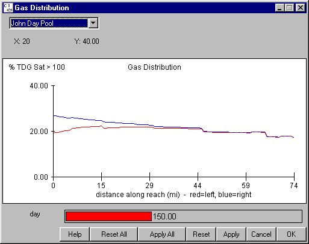

Gas Distribution
Selecting Reservoir Gas Distribution opens a graph of the level of dissolved gas in a reach from the start of the reach to the end. Both the left-bank flow and right-bank flow levels are marked on the same graph, with the left-bank flow in red and the right-bank flow in blue. These flows often have different levels of gas upon exiting a dam and become more mixed as the river flows downstream. The total amount of gas in the reach also decreases due to the dissipation in the reach. A slider for the graph is provided to change the Julian day for which gas is displayed. The X-axis is the distance downstream in miles from the start of the reach, mile 0. The Y-axis is the gas level measured in percent above 100, the equilibrium level. For example, if saturations vary between 100% and 110%, the Y-axis will range from 0 to 10.
Gas Distribution opens a graph of the level of dissolved gas in a reach from the start of the reach to the end. Both the left-bank flow and right-bank flow levels are marked on the same graph, with the left-bank flow in red and the right-bank flow in blue. These flows often have different levels of gas upon exiting a dam and become more mixed as the river flows downstream. The total amount of gas in the reach also decreases due to the dissipation in the reach. A slider for the graph is provided to change the Julian day for which gas is displayed. The X-axis is the distance downstream in miles from the start of the reach, mile 0. The Y-axis is the gas level measured in percent above 100, the equilibrium level. For example, if saturations vary between 100% and 110%, the Y-axis will range from 0 to 10.
This window emulates an Equation Input window, but it is display only.

Gas Distribution window